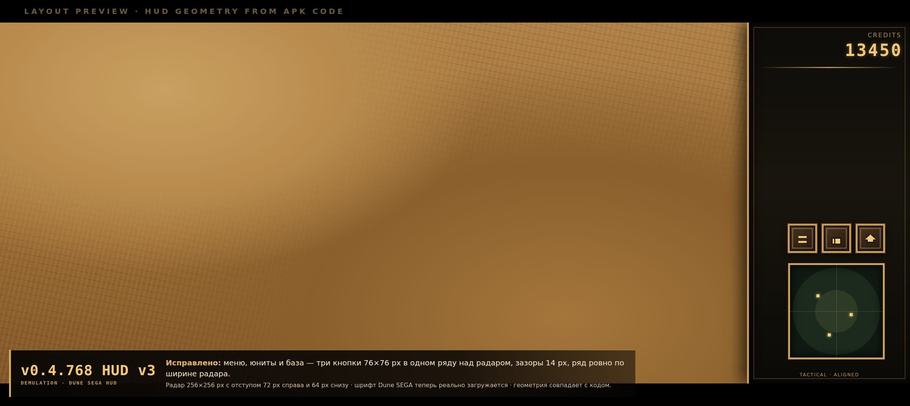

SEGA MEGA DRIVE · 1994 STYLE
DEMULATION
DUNE: The Battle for Arrakis — HUD Mod
v3: три одинаковые квадратные кнопки — меню, юниты и база — стоят одним ровным рядом над радаром. Радар 256×256 px отодвинут от края, карта получила отступы, шрифт Dune SEGA загружается из assets с безопасным откатом.

Что изменено в v3
- Три кнопки в один ряд: меню, юниты и база одинакового размера 75.85×75.85 px, зазоры 14.22 px, ряд ровно по ширине радара.
- Радар 256×256 px с отступом 72 px справа и 64 px снизу — карта и радар больше не прижаты к углу.
- Шрифт Dune SEGA реально загружается через
Typeface.createFromAssetизassets/fonts/dune_sega.ttf; при ошибке — системный моноширинный. - Иконка меню — три полосы; юниты — «цепочка»; база — «ангар». Хитбоксы совпадают с квадратами.
- Вылет при запуске ROM не возвращён: исправление DEX-верификации сохранено,
cmd package compile -f -m verifyпроходит.
Сборка
apktool b -o unsigned.apk apktoolout
zipalign -p -f 4 unsigned.apk aligned.apk
apksigner sign --ks tools/mod.jks aligned.apk